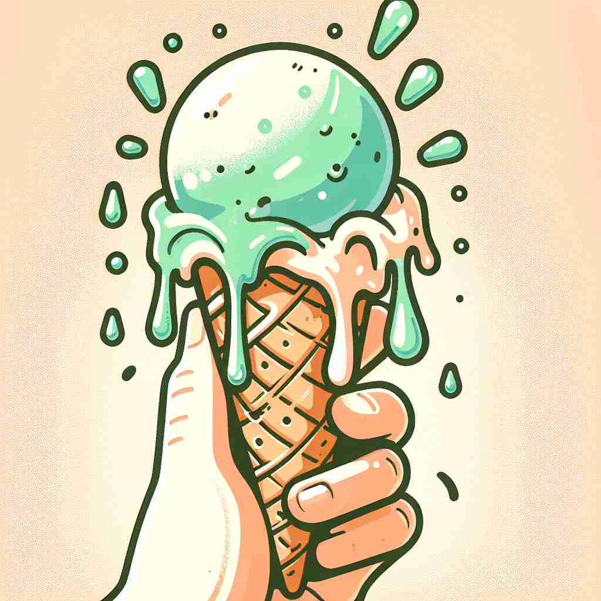

💬 The sun will melt the ice cream on a hot day. 太阳会在炎热的日子里融化冰淇淋。

💬 The sun will melt the ice cream if we stay outside too long. 如果我们在外面待太久，太阳会融化冰淇淋。
💬 The sun will melt the ice cream on a hot day. 太阳会在炎热的日子里融化冰淇淋。
💬 The sun will melt the ice cream if we stay outside too long. 如果我们在外面待太久，太阳会融化冰淇淋。
🧠 想象一块冰在阳光下融化的场景。这个"融化"的核心概念可以延伸到各种情况：人群散去如冰融化，心变软如冰融化，颜色混合如不同物质融合，金钱迅速花光如冰快速融化。通过这个生动的画面，你可以轻松记住并理解'melt'的各种用法。
🔈 [melt]
🗝️ v. to change from a solid to a liquid state through heat 通过加热使固体变成液态
🎭 在一个温暖的厨房里，小女孩聚精会神地看着窗台上的巧克力块随着热气开始慢慢融化，变得粘稠而柔软，完美展示了'melt'的基本含义：通过加热，从固体变为液体。
💬 The snow began to melt as the temperature rose. 随着气温的升高，雪开始融化。
🌳 “melt” 是一个基础动词，源于古英语 “meltan”，与 Proto-Germanic 词根 “meltaną” 有关，表示融化、熔化的意思。
💡 记忆 “melt” 时，可以联想为固体物质在加热后变得柔软的过程，通过记住冰块在热水中的变化来理解这个词的意思。
🗝️ v. to dissolve or disappear gradually 逐渐溶解或消失
🎭 在一个春日的公园里，积雪在阳光的照射下慢慢消失，逐渐露出底下的青草，展示了'melt'作为逐渐消融或消失的含义。
💬 The crowd melted away after the concert. 演唱会结束后，人群渐渐散去。
🤔 比喻固体融化消失的过程
🗝️ v. to soften in feeling; become tender or gentle 使感情缓和；变得温柔或温和
🎭 在一个温馨的家庭聚会上，爷爷眉头紧锁，但当小孙女用软软的声音叫他'爷爷，我爱你'，他的表情立刻变得温柔，这正是'melt'作为转变心情为柔和的例子。
💬 Her heart melted when she saw the puppy. 她看到小狗时，心都融化了。
🤔 情感上的"融化"，变得柔和
🗝️ v. to blend or merge gradually 逐渐混合或融合
🎭 在一间艺术工作室中，画家将不同颜色的颜料放置在一起，轻轻刷下，看到颜色在画布上自然交融，完美展现了'melt'指颜色逐渐融合的意思。
💬 The colors melted into each other, creating a beautiful sunset. 颜色交融在一起，形成了一幅美丽的日落。
🤔 物体融化后混合的过程
🗝️ v. to spend (money) quickly 快速花钱
🎭 在一个繁忙的购物中心，一个年轻人兴奋地扫货，把手里刚领的薪水快速用掉，这种行为正体现了'melt'作为快速花钱的含义。
💬 His inheritance melted away in less than a year. 他的遗产在不到一年的时间里就消失殆尽。
🤔 钱像冰一样快速"融化"消失
🗝️ n. a small amount of melted food, especially cheese 少量融化的食物，尤其是奶酪
🎭 在一个热闹的餐厅里，服务员端上一盘热腾腾的意大利面，上面覆盖着刚刚融化的香浓奶酪，展示了'melt'作为融化食物（特别是奶酪）的一小部分的意义。
💬 The sandwich was filled with a cheese melt. 三明治里夹着融化的奶酪。
🤔 从动词转变为名词，表示融化的食物